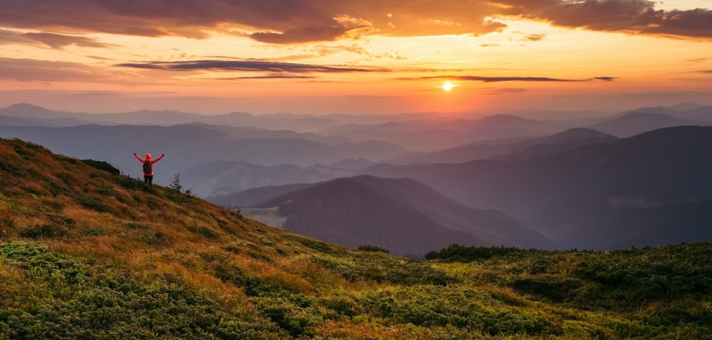

SLM Company
+380338844776
+380788844776
Карпати — одне з найбільш відвідуваних місць України, тут неймовірні гори, красиві ліси, бурхливі річки, чисте повітря – все це дає заряд бадьорості на рік вперед.
Альпіністи і любителі гірських прогулянок можуть відправитися в похід до найближчих вершин. Серед туристів популярністю користуються маршрути до диких водоспадів і до цілющих джерел. Влітку в них сміливо можна скупатися – за повір’ями купання в мінеральних джерелах приносить столітнє здоров’я. Ті, хто любить ризик і екстрим, можуть випробувати себе на сплаві по швидких гірських річках – до послуг туристів рафтинг і сплав на катамаранах. Ліси Карпат багаті ягодами і грибами.
Відпочинок у Верховині буде цікавий справжнім поціновувачам природи, а також давніх традицій Гуцульщини. Тут збереглися старовинні народні звичаї і обряди, легенди й казки. Відпочинок влітку в Верховині в основному пов’язаний зі збором ягід, грибів, лікарських трав. Відпочинок у Верховині порадує красою гірських ландшафтів. Верховина визнана лікувально-оздоровчим курортом, оскільки на її території знаходяться більше 100 джерел мінеральних вод..
Красиві гірські схили, чисте повітря, ліси, достаток фарб і розваг. Тут як ніде багато варіантів для активного проведення часу. Якщо шукаєте, де зупинитися в Славському, дуже рекомендуємо Вілла «Альпійка». Це особливе місце з неймовірною атмосферою відпочинку, якісним сервісом, красою природи та різноманіттям розваг. Котеджний комплекс знаходиться біля гірськолижного комплексу «Захар Беркут».
Міжгір’я ще один курорт в Карпатах, куди прагнуть потрапити туристи. Саме тут знаходиться легендарне озеро Синевир, просочене легендами, містикою і неземними красотами! А ще недалеко від Міжгір’я розташований унікальний скансен Колочава, або як його називають «селище 10 музеїв».
В Яремче туристів зацікавить безліч варіантів активного дозвілля – походи в гори і ліс, різноманітні екскурсійні програми, рафтинг, катання на конях, гірських велосипедах, квадроциклах. Люди похилого віку мають можливість поправити здоров’я в санаторіях. Чисте повітря, запах квітів і лісових трав, прекрасні пейзажі, вируючої річки – все це залишить незабутні спогади про відпочинок в Яремче.
Купуйте білети на нашому сайті зараз, та отримайте знижку 50% на кожен 2 білет